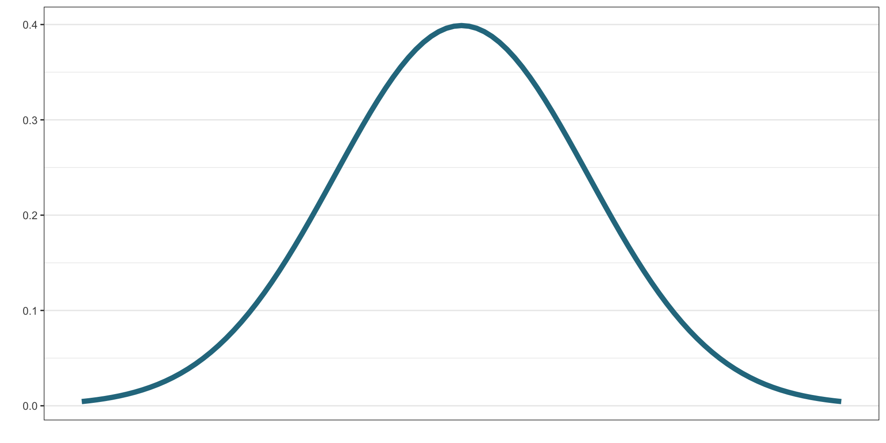
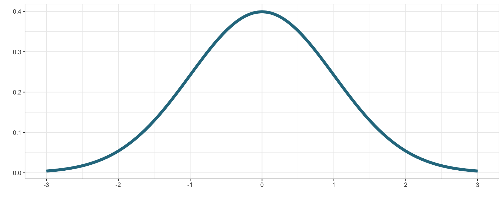
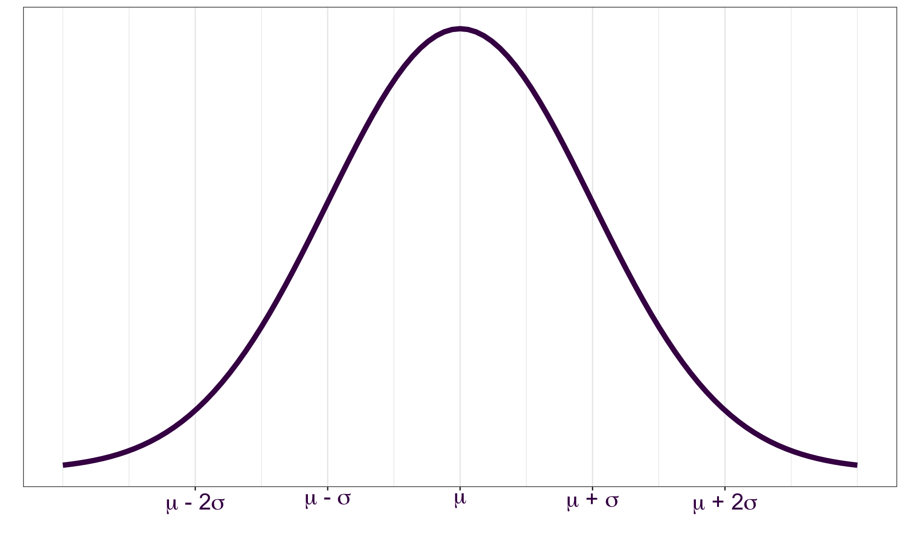
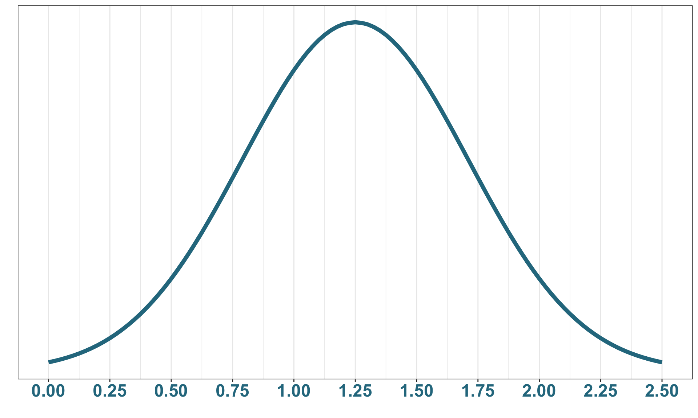

01:00
If you’d like to export this presentation to a PDF, do the following
This feature has been confirmed to work in Google Chrome and Firefox.
In a study on driving reaction time, researchers record the time (in seconds) that it takes study participants to react to the brake lights of a vehicle traveling in front of them.
A histogram of the recorded data is shown below.
Describe the shape, center, and spread of the distribution.
01:00
Useful when modeling a continuous random variable that has a bell-shaped distribution.

\(\mu\): mean - determines the center of the distribution
\(\sigma\): standard deviation - determines the spread of the distribution
\[f(x) = \frac{1}{\sqrt{2\pi \sigma^2}}e^{-\frac{(x-\mu)^2}{2\sigma^2}}\] for \(x\) in \((-\infty, \infty)\)
Expectation: \(E(X) = \mu\)
Variance:\(Var(X) = \sigma^2\)
The Standard Normal Distribution is a Normal distribution with mean \(\mu=0\) and standard deviation \(\sigma=1\).
\[Z \sim N(0, 1)\]

For a Normal random variable, \(X\), a z-score represents the number of standard deviations any observation \(x\) is from the mean.
\[z = \frac{x-\mu}{\sigma}\]

The driving reaction time study suggests that reaction times to break lights are Normally distributed with a mean of 1.25 seconds and standard deviation of 0.46.
Consider a driver who reacted in 0.79 seconds. How many standard deviations away from the mean is this driver’s reaction time?
Calculate the z-score!
00:45
\(z=\)\(\frac{x-\mu}{\sigma}\)\(=\frac{0.79-1.25}{0.46}\)\(=-1\)
The driver’s reaction time is 1 standard deviation less than (i.e., faster than) the average driver in the study.
The driving reaction time study suggests that reaction times to break lights are Normally distributed with a mean of 1.25 seconds and standard deviation of 0.46.
What is the probability of a randomly selecting a driver with a reaction time less than 1 second?

\[P(X < 1) = \int \limits_{-\infty}^{1} \frac{1}{\sqrt{2\pi (0.46^2)}}e^{-\frac{(x-1.25)^2}{2(0.46^2)}} dx\]
We cannot solve this analytically - we must use R!
Normal Distribution
\(F(x) = P(X \leq x)\):
pnorm(q, mean, sd, lower.tail = TRUE)
\(p^{th}\) percentile:
qnorm(p, mean, sd, lower.tail = TRUE)
Please do the following:
Answer the one question in the google form that can be accessed in any of the following ways:
Typing the following URL into your browser. The URL is case sensitive. https://beav.es/W4_survey
Find the Week 4 Survey link on Canvas in the Quick Links module
Scan the QR code
Recall that inferential statistics use information from a sample to estimate or test characteristics from a population of interest.
Typically, we calculate a point estimate from the sample as our best guess of the parameter of interest.
Naturally, our best guess for the population mean, \(\mu\), from a sample is the sample mean, \(\overline{x}\).
Our best guess for the population proportion, \(p\), is the sample proportion, \(\hat{p}\).
As part of a quality control process for computer chips, an engineer at a factory randomly samples 212 chips during a week of production to test the current rate of chips with severe defects. She finds that 27 of the chips are defective.
The information above describes the outcome of a single sample. Suppose the true proportion of defective chips at this factory is \(p=0.1\).
The value \(p=0.1\) is the
a. population parameter
b. sample statistic
Answer the question at
PollEv.com/erinhowardstats
Even when robust sampling schemes are used, different samples will yield different point estimates.
Population
Sample 1
Sample 2
Sample 3
\(\hat{\theta}_1\) \(\hat{\theta}_2\) \(\hat{\theta}_3\) \(\hat{\theta}\) represents a generic point estimate.
Population Distribution
Distribution of the entire collection of interest.
SamplED Distribution
Distribution of \(n\) observations obtained from a single sample.
SamplING Distribution
Distribution of a sample statistic, such as \(\overline{x}\) or \(\hat{p}\), from repeated samples of size \(n\) from the population.
As part of a quality control process for computer chips, an engineer at a factory randomly samples 212 chips during a week of production to test the current rate of chips with severe defects. She finds that 27 of the chips are defective.
The information above describes the outcome of a single sample. Suppose the true proportion of defective chips at this factory is \(p=0.1\).
Suppose we were able to collect every possible sample of size 212 from the population of chips produced.
The distribution of the sample proportions of defective chips is the
a. population distribution.
b. sampled distribution.
c. sampling distribution.
Answer the question at
PollEv.com/erinhowardstats
Understanding the sampling distribution of commonly used statistics, such as \(\overline{x}\) and \(\hat{p}\), allows us to quantify the uncertainty in our point estimates.
The variability of the point estimate is called the standard error.
The standard error is the standard deviation of the sampling distribution.
As \(n\) increases, the standard error of the point estimate decreases.
When observations are independent and the sample size, \(n\), is sufficiently large, the central limit theorem states that the distributions of \(\hat{p}\) and \(\overline{x}\) are approximately Normal.
The sample size conditions (“sufficiently large”) and the details of these normal distributions differ for \(\hat{p}\) and \(\overline{x}\).
Sample Proportion, \(\hat{p}\)
\[\hat{p}\sim N\bigg(p, \sqrt{\frac{p(1-p)}{n}}\bigg)\] where \(p\) represents the population proportion
Sample Mean, \(\overline{x}\)
\[\overline{x}\sim N\bigg(\mu, \frac{\sigma}{\sqrt{n}}\bigg)\] where \(\mu\) and \(\sigma\) represent the population mean and standard deviation, respectively.
As part of a quality control process for computer chips, an engineer at a factory randomly samples 212 chips during a week of production to test the current rate of chips with severe defects. She finds that 27 of the chips are defective.
The information above describes the outcome of a single sample. Suppose the true proportion of defective chips at this factory is \(p=0.1\).
Suppose we were able to collect every possible sample of size 212 from the population of chips produced.
The distribution of the sample proportion of defective chips is
Answer the question at
PollEv.com/erinhowardstats
The sample size conditions needed to apply the Central Limit Theorem differ depending on the statistic.
Sample proportion, \(\hat{p}\)
For the CLT to apply to the distribution of the sample proportion, we need the following sample size conditions to be met:
\(np \geq 10\)
\(n(1-p) \geq 10\)
Sample mean, \(\overline{x}\)
Use the sample size and observe the shape of the sampled distribution to determine if the sample size is sufficiently large:
If \(n\geq 30\), we can typically assume the sampling distribution of \(\overline{x}\) is approximately Normal and the CLT applies.
If \(n < 30\), we need to look at the sampled distribution. If there are no clear outliers or strong skewness in the sampled data, we can assume the sampling distribution of \(\overline{x}\) is approximately Normal and the CLT applies.
If the sample size conditions aren’t met, we cannot apply the results of the CLT.
As part of a quality control process for computer chips, an engineer at a factory randomly samples 212 chips during a week of production to test the current rate of chips with severe defects. She finds that 27 of the chips are defective.
The information above describes the outcome of a single sample. Suppose the true proportion of defective chips at this factory is \(p=0.1\).
In the previous participation question, we stated that the distribution of \(\hat{p}\) was Normal, but we didn’t check the sample size conditions before doing so! Are the sample size conditions met in this scenario in order to apply the central limit theorem?
Answer the question at
PollEv.com/erinhowardstats
Want more practice with this material? An optional activity is available. Find Practice with the Central Limit Theorem in the Week 4 module.